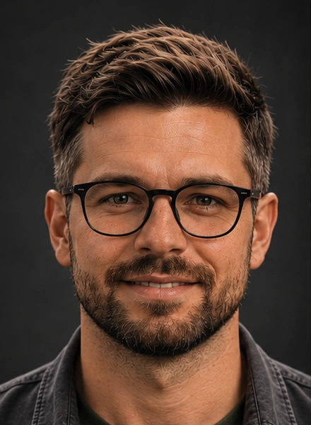

OVERVIEW
Vasyl
Vasyl is a newly initiated kharakternyk who helps build connections between people and communities.

CANON AND STORY ROLE
Confirmed information
In “Day 10. Grandfather Mykola. Patron”, Vasyl accompanies Leh and Grandfather Mykola to meet Yevhen, a potential patron. Later, in “Vasyl. The Rally in Kharkiv”, he deliberately travels through the city without using a portal, observes public sentiment and analyses social tension. The text presents him as attentive to everyday life beyond reports and analytical systems.